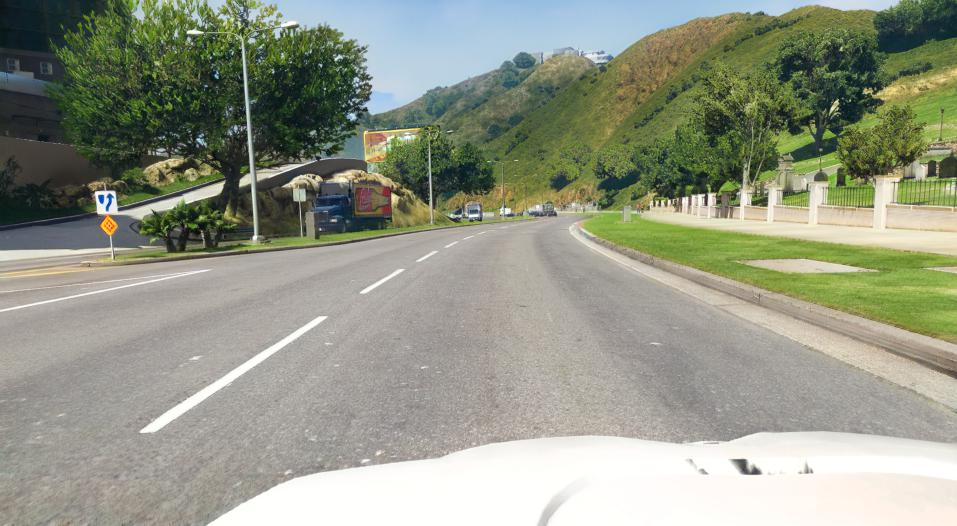
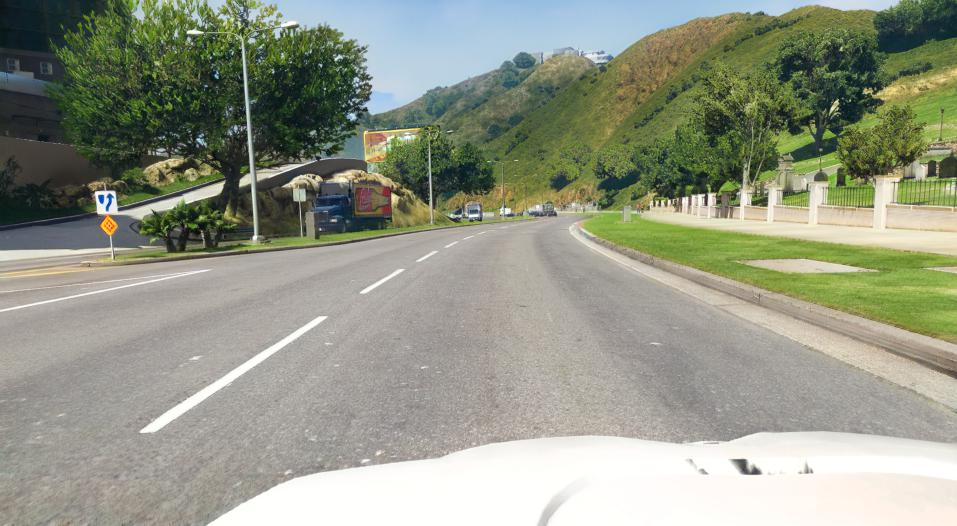

The modifications by our method are geometrically and semantically consistent with the original images.


They are also temporally stable:
The modifications by our method are geometrically and semantically consistent with the original images.
They are also temporally stable:
It greens the parched grass and hills in GTA's California:


It adds reflections to the windows and increases the fresnel effect (e.g., at the roof of cars):

It rebuilds the roads:

Images from this dataset are recorded around the world with wide variety of cameras. The images are more vibrant and of high resolution.
Our method captures the vibrant colors of Vistas:


It removes distant haze and rebuilds the road:


Grass becomes more voluminous:
 
